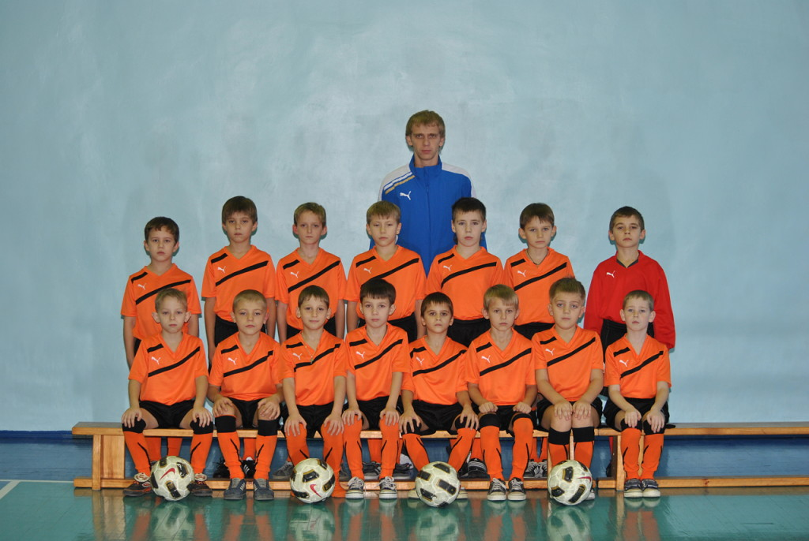

Малахов Юрий Андреевич
Я родился 6 мая 2003 года в городе Старый Оскол. В школу пошёл в 2010. В это же время, тренер футбольной комнды пригласил заниматься футболом.
В итоге я начал тренироваться в команде "Металлург" 2003 года рождения. Тренировались, выступали на турнирах, призовых мест не занимали.
Спустя 2 года после смены тренера объедянились с другими ребятами также 2003 года. Смогли занять призовые места в парочке турнирах на область. Позже из-за высоких запросов тренера по зарплате и его мошенических поступков многие в том числе и я, ушли из команды.
Наши будующие сокомандники распались как раз таки из-за такой же причины. В итоге объедянились ребята из двух городов Старый Оскол и Губкин. Команда была очень боевой. Нашли тренера, команда называлась "Лебединец". Вместе мы были около 1.5 года, успели выйграть множество турниров.
Один из них, турнир среди областей, где в финале выйграли Воронежский "Факел", но после турнира нашего тренера пригласили официально работать во взрослую команду из Казахстансой 2 лиги. В четрвёртый раз поменялся тренер, но теперь их было трое, один главный и двое помощники все они были игроками взрослой команды "Металлург".
Спустя год где-то в Воронеже на товарещском матче я получил травму колена на предыгровой тренировке, после которой перестал тренироваться.

Фото сделано в 2010 году.
Окончил школу в 2019 году и поступил в политех, где и на данный момент прохожу обучение.